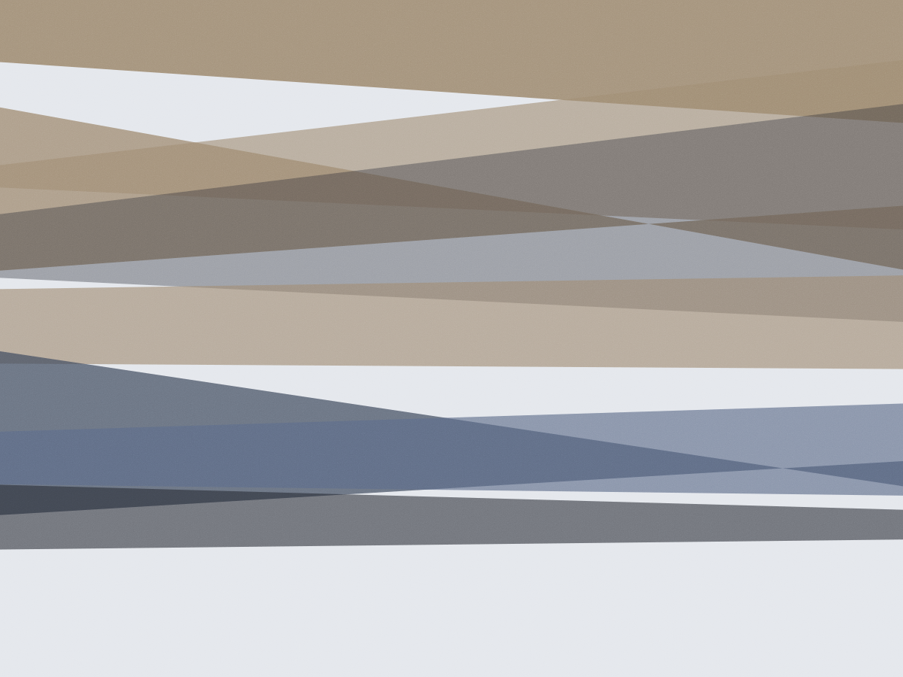

Consultório de psicologia · Pinheiros, desde 2017
Terapia com hora marcada e 50 minutos só seus
Oito psicólogos, três abordagens e um consultório na Rua dos Pinheiros, a 400 metros do metrô Fradique Coutinho. Sessão de 50 minutos, R$ 200, presencial ou por vídeo, com horários até 21h.
Sigilo profissional conforme o Código de Ética do psicólogo. Nada do que você disser sai da sala.
Abordagens
Três linhas de trabalho, uma escolha explicada
A abordagem não é detalhe de bastidor: ela muda o jeito da conversa e o tempo que leva. Na primeira sessão você ouve a diferença entre as três e decide com o profissional.
- Terapia Cognitivo-Comportamental
- Trabalha a relação entre pensamento, emoção e comportamento, com tarefas entre sessões. Costuma ser indicada para ansiedade, insônia e fobia social, em ciclos de 12 a 20 sessões. Dra. Lívia Marques · CRP 06/128.455
- Psicanálise
- Escuta sem roteiro, com atenção ao que se repete na sua história e nas relações. Não tem número de sessões definido no início; a frequência semanal é combinada e revista. Dr. Aquiles Ferraz · CRP 06/091.302
- Terapia do Esquema
- Para padrões antigos que voltam em relacionamentos e no trabalho. Mistura técnica cognitiva com trabalho de origem na infância, em geral por um ano ou mais. Dra. Nina Okamoto · CRP 06/142.870
Não sabemos de antemão quanto tempo o seu processo leva, e ninguém aqui vai prometer isso.
O que cabe em 50 minutos
A sessão tem começo, meio e fechamento — e o relógio é combinado no início para você não sair no meio de um assunto. Esta é a divisão que usamos na maior parte dos casos.
- 00–05 Chegada O que ficou da semana anterior.
- 05–35 Trabalho O tema do dia, com o que aparecer no meio do caminho.
- 35–45 Costura O que fica de tarefa, pergunta ou observação para a semana.
- 45–50 Saída Agenda da próxima sessão e o que não coube hoje.
Quem atende na Serena
Seis dos oito profissionais; os outros dois entram na lista de espera de quinta.
- LM Dra. Lívia Marques Ansiedade, insônia e burnout. Terças e quintas, das 12h às 21h. Presencial e online.
- AF Dr. Aquiles Ferraz Atende desde 2009, com formação pela PUC-SP. Segundas e quartas, das 14h às 20h.
- NO Dra. Nina Okamoto Casais e questões de família. Sessão de casal dura 80 minutos e custa R$ 320.
- TB Tainá Bastos De 13 a 18 anos. Atende com autorização escrita de um responsável e devolutiva a cada seis sessões.
- RC Rafael Coutinho Só por vídeo, para quem mora fora de São Paulo. Fuso diferente é combinado caso a caso.
- ME Mara Estevão Luto e adoecimento na família. Atende também em português e espanhol.
Eu tinha medo de chegar e ter que contar tudo de novo para alguém diferente a cada mês. Fiquei três anos com a mesma psicóloga, no mesmo horário de terça, e foi isso que fez diferença.
Juliana R., 34 anos — paciente desde março de 2020
Depoimento autorizado por escrito para uso no site. Nomes completos não são divulgados, como pede o sigilo.
Quando tem horário
A agenda abre com 30 dias de antecedência e o horário é fixo: quem entra na terça das 19h mantém a terça das 19h. Desmarcação até 24 horas antes não é cobrada.
| Dia | Manhã | Tarde | Noite |
|---|---|---|---|
| Segunda | fechado | 14h–18h | 18h–21h |
| Terça | 9h–12h | 12h–18h | 18h–21h |
| Quarta | 9h–12h | 14h–18h | 18h–20h |
| Quinta | 9h–12h | 12h–18h | 18h–21h |
| Sexta | 9h–13h | 14h–17h | fechado |
| Sábado | 9h–13h | fechado | fechado |
Para atendimento online, o link da sala é enviado 10 minutos antes. É a mesma sala virtual, sempre com a mesma pessoa.
Valores, sem letra miúda
O valor é combinado na primeira conversa e não muda no meio do processo. Quem precisa pode pedir vaga na tabela social, que tem sete horários por semana.
Emitimos recibo para reembolso de plano de saúde com cobertura em psicoterapia.
- Sessão individual presencial — 50 minR$ 200
- Sessão individual online — 50 minR$ 180
- Sessão de casal — 80 minR$ 320
- Primeira conversa de triagem — 30 min, por telefonegratuita
- Tabela social (renda até 3 salários mínimos)R$ 90
Perguntas que chegam por e-mail
O que eu preciso contar na primeira sessão?
O que estiver te incomodando naquele dia, do jeito que sair. Não precisa de histórico completo nem de diagnóstico pronto. Se for difícil começar, a pessoa começa perguntando e a gente vai junto.
Meus dados ficam registrados?
O profissional mantém prontuário eletrônico com data, duração e anotações clínicas, guardado por cinco anos conforme a Resolução CFP nº 001/2009. Nada é compartilhado com família, empresa ou plano sem sua autorização por escrito.
Como funciona o reembolso do plano?
Emitimos recibo com CRM/CRP, data e valor no mesmo dia. A maioria dos planos com cobertura em psicoterapia devolve entre R$ 60 e R$ 140 por sessão, com limite mensal — vale confirmar o seu contrato antes da primeira sessão.
E se eu precisar faltar?
Avisando até 24 horas antes, o horário é remarcado na mesma semana quando houver vaga. Faltas sem aviso são cobradas, porque aquele horário ficou reservado.
Atendem adolescentes?
Sim, a partir de 13 anos, com autorização de um responsável. A primeira sessão é só com o adolescente; a devolutiva para a família acontece a cada seis sessões e com ele sabendo o que será dito.
A triagem é por telefone, 30 minutos, sem custo
Rua dos Pinheiros, 1.198 — sala 74, Pinheiros. Elevador, sala de espera com duas poltronas e nenhuma câmera na entrada.